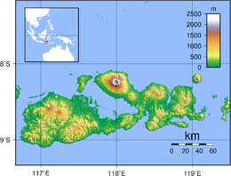

Pulau Sumbawa memiliki luas 14.386 km2, dan merupakan pulau terbesar di
provinsi NTB dan salah satu pulau terbesar dengan titik tertingginy dia Gunung Tambora yang merupakqan gunung api aktif
dengan ketinggian 2.850 m.
MOTTO : SABALONG SAMALEWA